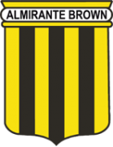
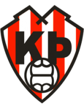
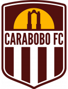
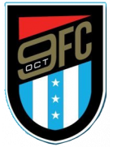
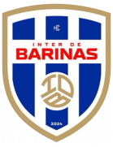

🏆 EURO 2024 Matches
| Date | Fixture |
Odds |
Win |
Result |
Over ⚽ = over 0.5 ⚽⚽ = over 1.5 ⚽⚽⚽ = over 2.5 ... ► |
Alerts Home 🏥 = Considerable injuries 🏥🏥 = Major injuries 📉 = Dip in form Note, you may see injuries when expanding match but no alert here, meaning the model does not consider them important. |
Alerts Away 🏥 = Considerable injuries 🏥🏥 = Major injuries 📉 = Dip in form Note, you may see injuries when expanding match but no alert here, meaning the model does not consider them important. |
|
|---|---|---|---|---|---|---|---|---|
| Thu. 20 Jun. | Denmark 1:1 England Form: WDDD Form: LWDD |
-1.22 vs 1.2 | 1.75 | 72% | 0.5 | 😴 0.3 |
📉 Home team has a dip in form recently | 📉 Away team has a dip in form recently |
| Thu. 20 Jun. | Spain 1:0 Italy Form: WWWW Form: WWLD |
0.56 vs -0.56 | 2.26 | 52% | 1 | ⚽ 1.25 |
📉 Away team has a dip in form recently | |
| Thu. 20 Jun. | Slovenia 1:1 Serbia Form: DDDD Form: WLDD |
-0.01 vs -0.04 | n/a | 10% | 0.5 | ⚽ 1.07 |
📉 Home team has a dip in form recently | 📉 Away team has a dip in form recently |
🏆 Copa America 2024 Matches
| Date | Fixture |
Odds |
Win |
Result |
Over ⚽ = over 0.5 ⚽⚽ = over 1.5 ⚽⚽⚽ = over 2.5 ... ► |
Alerts Home 🏥 = Considerable injuries 🏥🏥 = Major injuries 📉 = Dip in form Note, you may see injuries when expanding match but no alert here, meaning the model does not consider them important. |
Alerts Away 🏥 = Considerable injuries 🏥🏥 = Major injuries 📉 = Dip in form Note, you may see injuries when expanding match but no alert here, meaning the model does not consider them important. |
|---|
🌍 Global Matches
| Date | Fixture |
Odds |
Win |
Result |
Over ⚽ = over 0.5 ⚽⚽ = over 1.5 ⚽⚽⚽ = over 2.5 ... ► |
Alerts Home 🏥 = Considerable injuries 🏥🏥 = Major injuries 📉 = Dip in form Note, you may see injuries when expanding match but no alert here, meaning the model does not consider them important. |
Alerts Away 🏥 = Considerable injuries 🏥🏥 = Major injuries 📉 = Dip in form Note, you may see injuries when expanding match but no alert here, meaning the model does not consider them important. |
|
|---|---|---|---|---|---|---|---|---|
| Thu. 20 Jun. | San Luis de Quillota 0:2 CD Everton Form: LLLL Form: WWLL |
-3.47 vs 2.84 | n/a | 88% | 1 | ⚽⚽ 2.15 |
📉 Home team has a dip in form recently | 🏥 📉 Away team has considerable injuries and a dip in form recently |
| Thu. 20 Jun. | Kaspiy Aktau 3:0 FK Taraz Form: WLDL Form: LWDW |
1.72 vs -2.36 | n/a | 77% | 1 | ⚽ 1.73 |
📉 Home team has a dip in form recently | |
| Thu. 20 Jun. | Birmingham Legion FC 01:00 San Antonio FC Form: LDWL Form: LDLL |
1.52 vs -2.41 | 2.18 | 75% | None | 😴 0.64 |
📉 Home team has a dip in form recently | 📉 Away team has a dip in form recently |
| Thu. 20 Jun. | CA Boca Juniors 2:1  Club Almirante Brown Form: WLWW Form: WLWL |
1.47 vs -2.3 | 1.1 | 75% | 1 | ⚽ 1.33 |
📉 Home team has a dip in form recently | 📉 Away team has a dip in form recently |
| Thu. 20 Jun. | Denmark 1:1 England Form: WDDD Form: LWDD |
-1.22 vs 1.2 | 1.75 | 72% | 0.5 | 😴 0.3 |
📉 Home team has a dip in form recently | 📉 Away team has a dip in form recently |
| Thu. 20 Jun. | Navbahor Namangan 0:0 FC Qizilqum Form: WDDD Form: LDLD |
1.08 vs -1.77 | n/a | 71% | 0.5 | ⚽ 1.84 |
📉 Home team has a dip in form recently | 📉 Away team has a dip in form recently |
| Thu. 20 Jun. | Llaneros FC 4:3 after pensafter pens Orsomarso SC Form: LWDW Form: WLDL |
1.03 vs -1.61 | n/a | 70% | 1 | ⚽ 1.19 |
📉 Away team has a dip in form recently | |
| Thu. 20 Jun. | Okzhetpes Kokshetau 1:0 FK Aktobe II Form: WDWW Form: LLLL |
1.01 vs -2.14 | n/a | 70% | 1 | ⚽ 1.6 |
🏥 Home team has considerable injuries | 📉 Away team has a dip in form recently |
| Thu. 20 Jun. | Sepahan FC 2:0 Mes Rafsanjan Form: WWWW Form: LLWL |
0.99 vs -1.58 | n/a | 70% | 1 | ⚽⚽ 2.18 |
📉 Away team has a dip in form recently | |
| Thu. 20 Jun. | Deportivo La Guaira 23:00 Marítimo La Guaira Form: WWLL Form: WLDW |
0.93 vs -1.57 | 1.01 | 67% | None | ⚽ 1.69 |
📉 Home team has a dip in form recently | 📉 Away team has a dip in form recently |
| Thu. 20 Jun. | Thep Xanh Nam Dinh FC 1:0 Hong Linh Ha Tinh FC Form: WDDW Form: LWDL |
0.88 vs -1.91 | n/a | 65% | 1 | ⚽⚽ 2.22 |
📉 Home team has a dip in form recently | 🏥 📉 Away team has considerable injuries and a dip in form recently |
| Thu. 20 Jun. | Kairat-Zhas 6:1 Kaysar Zhas Kyzylorda Form: LWWL Form: WLLL |
0.8 vs -1.8 | n/a | 62% | 1 | ⚽⚽ 2.8 |
📉 Home team has a dip in form recently | 📉 Away team has a dip in form recently |
| Thu. 20 Jun. | Keflavík ÍF 1:1  Thróttur Reykjavík Form: LWLD Form: DDWL |
0.77 vs -1.67 | n/a | 61% | 0.5 | ⚽⚽ 2.54 |
📉 Home team has a dip in form recently | 📉 Away team has a dip in form recently |
| Thu. 20 Jun. | Valmiera FC 3:0 FK Metta Form: WWWW Form: LLLW |
0.76 vs -1.54 | 1.2 | 60% | 1 | ⚽⚽ 2.19 |
📉 Away team has a dip in form recently | |
| Thu. 20 Jun. | CS Sfaxien 0:0 Esperance Tunis Form: WDLW Form: DLWW |
-1.01 vs 0.58 | n/a | 53% | 0.5 | 😴 0.11 |
📉 Home team has a dip in form recently | 📉 Away team has a dip in form recently |
| Thu. 20 Jun. | Spain 1:0 Italy Form: WWWW Form: WWLD |
0.56 vs -0.56 | 2.26 | 52% | 1 | ⚽ 1.25 |
📉 Away team has a dip in form recently | |
| Thu. 20 Jun. | Cong An Ha Noi FC 5:1 Hai Phong FC Form: LLWW Form: WLWL |
0.49 vs -1.39 | n/a | 49% | 1 | ⚽⚽ 2.33 |
🏥 📉 Home team has considerable injuries and a dip in form recently | 📉 Away team has a dip in form recently |
| Thu. 20 Jun. | UMF Afturelding 0:3 ÍBV Vestmannaeyjar Form: WDWW Form: DWWW |
0.46 vs -1.32 | 2.68 | 47% | 0 | ⚽⚽⚽ 3.38 |
||
| Thu. 20 Jun. | Inter Miami CF 2:1 Columbus Crew Form: WLDW Form: LWLW |
0.38 vs -1.41 | n/a | 41% | 1 | ⚽⚽⚽ 3.35 |
🏥🏥 📉 Home team has MAJOR injuries and a dip in form recently | 📉 Away team has a dip in form recently |
| Thu. 20 Jun. | Becamex Binh Duong FC 0:1 LPBank Hoang Anh Gia Lai FC Form: LLLD Form: DLWL |
0.37 vs -1.13 | n/a | 39% | 0 | ⚽ 1.19 |
📉 Home team has a dip in form recently | 📉 Away team has a dip in form recently |
| Thu. 20 Jun. | Mes Rafsanjan 15:15 Sepahan FC Form: LLWL Form: WWWW |
-1.02 vs 0.36 | n/a | 39% | None | ⚽⚽ 2.18 |
📉 Home team has a dip in form recently | |
| Thu. 20 Jun. | Guayaquil City FC 3:2 Gualaceo SC Form: DDDL Form: DDWW |
0.34 vs -1.14 | n/a | 37% | 1 | 😴 0.66 |
📉 Home team has a dip in form recently | |
| Thu. 20 Jun. | Nasaf Qarshi 1:0 Neftchi Fergana Form: DWWL Form: LWWD |
0.32 vs -0.86 | n/a | 36% | 1 | 😴 0.78 |
📉 Home team has a dip in form recently | |
| Thu. 20 Jun. | MerryLand Quy Nhon Binh Dinh FC 4:2 Ha Noi FC Form: WWWD Form: WWWL |
-1.01 vs 0.29 | n/a | 34% | 0 | ⚽⚽ 2.45 |
📉 Away team has a dip in form recently | |
| Thu. 20 Jun. | Pittsburgh Riverhounds SC 0:1 Louisville City FC Form: DLLD Form: WLWL |
-0.79 vs 0.17 | 1.04 | 24% | 1 | ⚽ 1.57 |
📉 Home team has a dip in form recently | 📉 Away team has a dip in form recently |
| Thu. 20 Jun. | Academia Puerto Cabello 23:00  Carabobo FC Form: DDLD Form: WLDL |
0.16 vs -1.09 | n/a | 23% | None | 😴 0.84 |
📉 Home team has a dip in form recently | 📉 Away team has a dip in form recently |
| Thu. 20 Jun. | São Paulo Futebol Clube 0:1 Cuiabá Esporte Clube (MT) Form: WDDL Form: WLWW |
0.14 vs -1.01 | n/a | 21% | 0 | ⚽⚽ 2.06 |
🏥 📉 Home team has considerable injuries and a dip in form recently | 📉 Away team has a dip in form recently |
| Thu. 20 Jun. | FC Tulsa 2:1 Miami FC Form: LWWD Form: LLLD |
0.13 vs -0.82 | n/a | 20% | 1 | ⚽ 1.9 |
📉 Away team has a dip in form recently | |
| Thu. 20 Jun. | Coritiba Foot Ball Club 1:0 América Futebol Clube (MG) Form: WLWD Form: LWWL |
0.13 vs -1.15 | n/a | 20% | 1 | ⚽⚽ 2.88 |
🏥 📉 Home team has considerable injuries and a dip in form recently | 📉 Away team has a dip in form recently |
| Thu. 20 Jun. | D.C. United 0:1 Atlanta United FC Form: DLLL Form: LDWD |
-0.98 vs 0.1 | 2.76 | 18% | 1 | ⚽⚽ 2.22 |
📉 Home team has a dip in form recently | 📉 Away team has a dip in form recently |
| Thu. 20 Jun. | Los Angeles Galaxy 2:0 New York City FC Form: LWWW Form: WLLL |
0.09 vs -0.84 | n/a | 17% | 1 | ⚽ 1.55 |
📉 Away team has a dip in form recently | |
| Thu. 20 Jun. | St. Louis CITY SC 01:30 Colorado Rapids Form: DLLD Form: LWWW |
0.08 vs -1.07 | 2.1 | 17% | None | ⚽ 1.78 |
📉 Home team has a dip in form recently | |
| Thu. 20 Jun. | SJK Seinäjoki II 0:3 FC KTP Form: DDWL Form: WDWL |
-0.66 vs 0.08 | n/a | 16% | 1 | ⚽⚽⚽ 3.01 |
📉 Home team has a dip in form recently | 📉 Away team has a dip in form recently |
| Thu. 20 Jun. | Independiente Juniors 21:00  AD Nueve de Octubre Form: LWLL Form: DWWW |
-0.78 vs 0.07 | 1.26 | 15% | None | ⚽ 1.54 |
📉 Home team has a dip in form recently | |
| Thu. 20 Jun. | Inter de Barinas  23:00 Estudiantes de Mérida Form: WWDW Form: DLLL |
-0.01 vs -0.91 | n/a | 10% | None | 😴 0.94 |
📉 Away team has a dip in form recently | |
| Thu. 20 Jun. | Botafogo FC 2:0 Associação Atlética Ponte Preta Form: LWWW Form: LWLW |
-0.01 vs -0.81 | n/a | 10% | 1 | 😴 0.53 |
📉 Away team has a dip in form recently | |
| Thu. 20 Jun. | FC Dallas 5:3 Minnesota United FC Form: DWWL Form: DLLL |
-0.01 vs -0.74 | 1.46 | 10% | 1 | ⚽⚽ 2.56 |
🏥 📉 Home team has considerable injuries and a dip in form recently | 📉 Away team has a dip in form recently |
| Thu. 20 Jun. | Slovenia 1:1 Serbia Form: DDDD Form: WLDD |
-0.01 vs -0.04 | n/a | 10% | 0.5 | ⚽ 1.07 |
📉 Home team has a dip in form recently | 📉 Away team has a dip in form recently |
| Thu. 20 Jun. | Charlotte FC 2:2 Orlando City SC Form: WWDW Form: LLDW |
-0.43 vs -0.08 | 1.43 | 8% | 0.5 | ⚽ 1.62 |
📉 Away team has a dip in form recently | |
| Thu. 20 Jun. | Vila Nova Futebol Clube (GO) 1:0 Mirassol Futebol Clube (SP) Form: WLWW Form: WWLL |
-0.19 vs -0.61 | n/a | 6% | 1 | ⚽ 1.32 |
📉 Home team has a dip in form recently | 📉 Away team has a dip in form recently |
| Thu. 20 Jun. | Oakland Roots SC 2:1 El Paso Locomotive FC Form: WWWL Form: WLWD |
-0.43 vs -0.26 | 3.3 | 5% | 0 | ⚽ 1.43 |
📉 Home team has a dip in form recently | 📉 Away team has a dip in form recently |
| Thu. 20 Jun. | CD Ñublense 3:0 Huachipato FC Form: LDDW Form: LWWL |
-0.39 vs -0.27 | 3.35 | 5% | 0 | ⚽ 1.67 |
📉 Home team has a dip in form recently | 📉 Away team has a dip in form recently |
| Thu. 20 Jun. | Brusque Futebol Clube (SC) 0:0 Avaí FC Form: LWDD Form: WDWD |
-0.38 vs -0.28 | n/a | 4% | 0.5 | ⚽ 1.57 |
📉 Home team has a dip in form recently | 📉 Away team has a dip in form recently |
| Thu. 20 Jun. | FK Tukums 2000 2:1 FK Liepaja Form: LLLL Form: DDLL |
-0.29 vs -0.54 | 3.9 | 4% | 1 | ⚽⚽ 2.3 |
📉 Home team has a dip in form recently | 📉 Away team has a dip in form recently |
| Thu. 20 Jun. | CF Montréal 2:2 New York Red Bulls Form: DDDL Form: LDDW |
-0.29 vs -0.55 | 2.56 | 4% | 0.5 | ⚽⚽ 2.38 |
📉 Home team has a dip in form recently | 📉 Away team has a dip in form recently |
| Thu. 20 Jun. | Austin FC 1:1 Los Angeles FC Form: LLDW Form: WWDW |
-0.46 vs -0.3 | n/a | 4% | 0.5 | ⚽⚽ 2.03 |
📉 Home team has a dip in form recently | |
| Thu. 20 Jun. | Houston Dynamo FC 2:2 Seattle Sounders FC Form: DDDW Form: LWDW |
-0.31 vs -0.56 | 1.08 | 4% | 0.5 | ⚽⚽ 2.09 |
📉 Home team has a dip in form recently | 🏥 Away team has considerable injuries |
| Thu. 20 Jun. | FC Cincinnati 4:3 Philadelphia Union Form: LWWL Form: DLLL |
-0.32 vs -0.65 | 1.56 | 4% | 1 | ⚽⚽⚽ 3.03 |
🏥 📉 Home team has considerable injuries and a dip in form recently | 📉 Away team has a dip in form recently |
| Thu. 20 Jun. | ÍR Reykjavík 3:1 Fjölnir Reykjavík Form: LLWD Form: DWLD |
-0.35 vs -0.32 | n/a | 4% | 0 | ⚽⚽ 2.89 |
📉 Home team has a dip in form recently | 📉 Away team has a dip in form recently |
| Thu. 20 Jun. | San Jose Earthquakes 1:2 Portland Timbers Form: LLLL Form: DDWW |
-0.32 vs -0.55 | 2.12 | 4% | 0 | ⚽⚽ 2.54 |
📉 Home team has a dip in form recently | |
| Thu. 20 Jun. | Toronto FC 1:2 Nashville SC Form: DLLL Form: LDWW |
-0.76 vs -0.37 | 2.36 | 3% | 1 | ⚽⚽ 2.26 |
🏥🏥 📉 Home team has MAJOR injuries and a dip in form recently | |
| Thu. 20 Jun. | Sporting Kansas City 3:4 Real Salt Lake City Form: WLLL Form: WDWL |
-0.4 vs -0.5 | n/a | 2% | 0 | ⚽⚽⚽ 3.02 |
📉 Home team has a dip in form recently | 📉 Away team has a dip in form recently |
| Thu. 20 Jun. | Esporte Clube Juventude 2:0 Clube de Regatas Vasco da Gama Form: LDWL Form: LLDL |
-0.45 vs -0.79 | n/a | 1% | 1 | ⚽ 1.93 |
🏥 📉 Home team has considerable injuries and a dip in form recently | 🏥 📉 Away team has considerable injuries and a dip in form recently |
| Thu. 20 Jun. | Fortaleza Esporte Clube 1:0 Grêmio Foot-Ball Porto Alegrense Form: WLLL Form: DLLL |
-0.51 vs -0.61 | n/a | 0% | 1 | ⚽⚽ 2.98 |
🏥 📉 Home team has considerable injuries and a dip in form recently | 🏥 📉 Away team has considerable injuries and a dip in form recently |
| Thu. 20 Jun. | Sport Club Internacional 1:0 Sport Club Corinthians Paulista Form: LDWW Form: LDDL |
-0.64 vs -0.58 | n/a | 0% | 0 | ⚽⚽ 2.08 |
🏥🏥 Home team has MAJOR injuries | 📉 Away team has a dip in form recently |
| Thu. 20 Jun. | Esporte Clube Vitória postponed Clube Atlético Mineiro Form: DDWW Form: DLWW |
-0.63 vs -0.58 | n/a | 0% | None | ⚽ 1.57 |
🏥 Home team has considerable injuries | 🏥🏥 📉 Away team has MAJOR injuries and a dip in form recently |
| Thu. 20 Jun. | Cruzeiro Esporte Clube 2:0 Fluminense Football Club Form: WLDL Form: DLLL |
-0.7 vs -0.74 | n/a | 0% | 1 | ⚽ 1.36 |
🏥 📉 Home team has considerable injuries and a dip in form recently | 🏥🏥 📉 Away team has MAJOR injuries and a dip in form recently |
Last updated 05:36:36 2024-06-26
Privacy Policy - 18+. Gamble Responsibly. - Terms